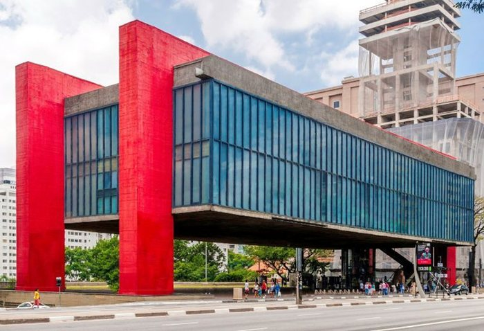

1. Background
The São Paulo Museum of Art (MASP) building is built using four concrete columns supporting four prestressed concrete beams that support both floors of the gallery. The structural analysis and construction process can be found from the paper “Construction of the museu de arte de são paulo” by Gabriela Campagnol and Stephen Caffey and member dimensions can be found from the document “MASP’s Structure Conservation Plan”. This project focuses on redesigning the columns with two objectives, minimizing material usage and optimizing for mechanical strength.

Figure 1: MASP building street view